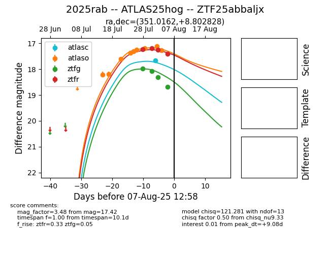

Target 2025rab at 2025-08-07 16:51, see:
FINK: fink-portal.org/2025rab
Lasair: lasair-ztf.lsst.ac.uk/objects/2025rab
ALeRCE: alerce.online/object/2025rab
TNS: wis-tns.org/object/2025rab
YSE: ziggy.ucolick.org/yse/transient_detail/2025rab
alt names
ZTF25abbaljx (ztf,fink)
2025rab (tns,yse)
ATLAS25hog (atlas)
coordinates:
equatorial (ra, dec) = (351.0162,+8.80283)
galactic (l, b) = (89.3819,-48.29496)
photometry
last atlasc=17.66, atlaso=17.39, ztfg=18.69, ztfr=17.42
1 atlasc, 10 atlaso, 4 ztfg, 4 ztfr detections
